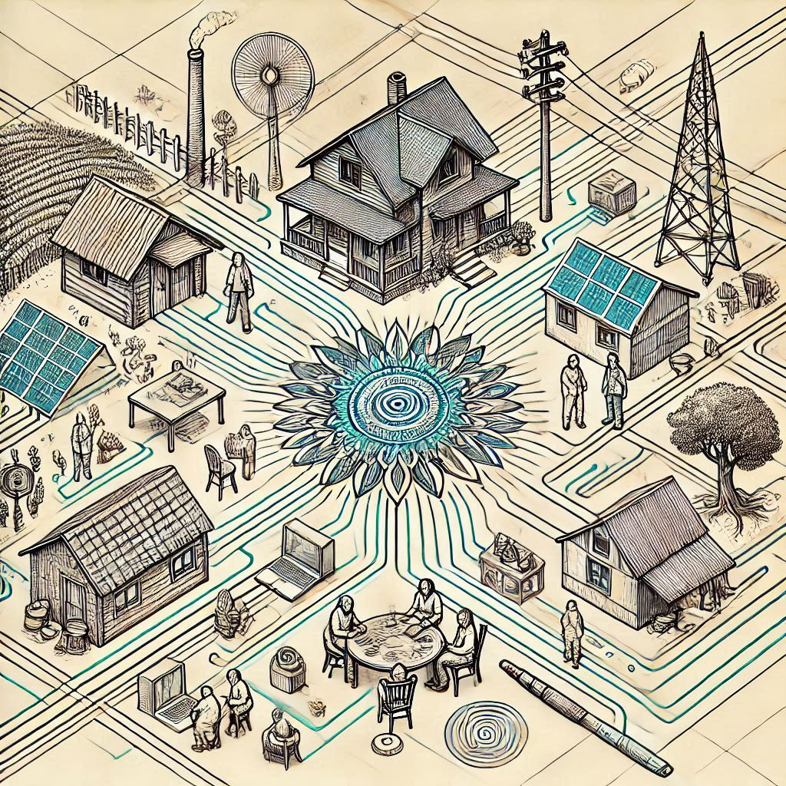

THIS PAGE IS A WORK IN PROGRESS

Anarchist Innovation Station
Welcome. Thank you for your willingness
to engage in conversation with us about
how to innovate your position in the
world to advance our shared goal of a
free and stateless society.
These are the stated goals, we would
like to add more:
-
Delegitimizing the State
-
Promote liberty in your
conversations
-
Promote liberty in public
writings
(letters-to-editors, web
pages, articles, etc.)
-
Correct others when they
fall for statist bromides
and myths
-
Correct others when they
fall for the stateholm
syndrome
-
Avoid statist puffery in
language
-
Challenge the statist
paradigm
We want to provide insurance that is
affordable and that enables people to
make decisions that they would otherwise
feel they did not have enough support to
make.
Morals, Vices, and
Boundaries
- physical boundaries
-
how do you communicate
boundaries
-
where do you draw boundaries
- fences
- flags
- dogs can be a boundary
-
a closed door is a boundary
It’s just not potent
enough.
to be continued...